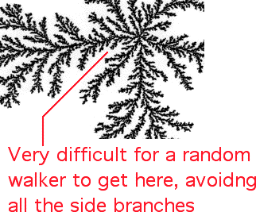
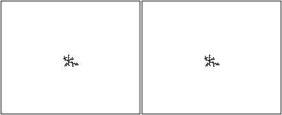
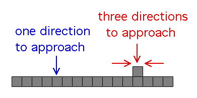

| Obtaining such complicated patterns from simple rules may be surprising,
but a qualitative understanding of some features is straightforward. |
| Growth deep inside the fjords is
very slow since a wandering particle must avoid contacting the walls in order to arrive deep
inside: the branches screen the interior from additional growth. |
|  |
| The animation illustrates the growth of a DLA cluster. |
| The right side shows the growing cluster, |
| the left side shows
the part of the cluster that has been added. |
| Note the growth is almost entirely on the periphery of the cluster. |
|  |
| Click the picture to return. |
|
| To see how the fjords
arise, consider their complement, the branches of the cluster. |
| A single-cell bump on a
straight edge of the cluster is not damped out by further growth, but rather is
amplified because it has three growth sites (unoccupied neighbors) while each cell along
the edge has only one growth site, and so the bump is more likely to capture a wandering
particle. |
|  |
| That is, initial fluctuations from the straight-line edge are likely to
grow into larger branches, and the spaces between the branches are the beginnings of the
fjords. |
| This behavior is also exhibited along each branch: by the same process, bumps
along a branch lead to the formation of smaller branches off the larger, suggesting that
DLA clusters have fractal properties. |